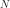

Modeling Guide#
The core functionality of DeerLab focuses on the construction, manipulation, and fitting of models. In this way, the workflow of DeerLab for any application can be structured as follows:
Loading of the experimental dataset(s) and pre-processing (if strictly necessary).
Modelling of the datasets.
Fitting of the models to the datasets.
In this guide, we will focus on the second step, i.e., the modeling. We will introduce all model-related concepts.
The Model object#
All models in DeerLab pertain to the deerlab.model.Model class. All functions returning models as their outputs will return such Model objects. You can check whether a variable is a model by using the type() function. For example:
>>> type(dl.dd_gauss)
deerlab.model.Model
Models in DeerLab have two essential components: model parameters and a model function that takes those parameters.
Model Parameters#
The model parameters are those quantities that parametrize the model’s response and are (usually) the quantity of interest sought to be estimated via DeerLab. DeerLab represents parameters as Parameter objects which can be accessed using the dot-notation from the model (e.g. model.<parameter>). For example
>>> type(dl.dd_gauss.mean)
deerlab.model.Parameter
The Parameter object#
The Parameter object contains all the information related to a particular parameter, namely
- Boundaries (
<parameter>.lband<parameter>.ub) The upper/lower bounds of the parameter that constrain the parameter values during fitting and optimization. Built-in models models will have pre-defined boundaries, while newly constructed models will have fully unbounded parameters. A parameter is considered unbounded when any of its bounds is set to plus/minus infinity (using the Numpy infinity
np.inf). Note that boundaries do not prevent the model from being evaluated outside the them.- Start values (
<parameter>.par0) The start values at which the parameters search start during fitting and optimization. Must be initialized within the boundaries. Built-in models will have pre-defined start values, but newly constructed models will not. Start values are required for fitting. If not specified in the model, the start values will be requested when trying to fit the model.
- Linearity (
<parameter>.linear) Whether the parameter is linear (
True) or non-linear (False). In DeerLab, the distinction between linear and non-linear parameters is essential. It allows DeerLab to apply specialized solvers (such as separable non-linear least squares) to find accurate parameter estimates optimally. This attribute is non-editable and is set internally by the model operation functions (see the preceding sections).- Freezing (
<parameter>.frozen) Whether a parameter is frozen to a specific value. Freezing refers to setting a parameter to a static value and to be omitted during the fitting routines. A parameter can be frozen to a certain value by using the method
<parameter>.freeze(value), and set back by using the<parameter>.unfreeze(). If a parameter is frozen, it will have an additional attribute<parameter>.valuecontaining the value at which the parameter has been frozen. Note that freezing does not prevent the model to be evaluated at values different than the one at which a parameter has been frozen.- Documentation (
<parameter>.descriptionand<parameter>.unit) These attributes serve documentation and information purposes and do not affect neither the evaluation nor fitting of the model. Both can be edited as strings;
<parameter>.descriptioncontains a brief description of the parameter and<parameter>.unitcontains the SI units of the parameter if any. For newly constructed models, both attributes are set toNoneand need ot be manually filled.
A summary of the model and all its parameters and related attributes can be quickly accessed by printing the Model object. For example
>>>print(dl.dd_gauss)
Description: Gaussian distribution model
Signature: (r, mean, std)
Constants: [r]
Parameter Table:
======= ======= ======= ======== ======== ======= ====================
Name Lower Upper Type Frozen Units Description
======= ======= ======= ======== ======== ======= ====================
mean 1 20 nonlin No nm Mean
std 0.05 2.5 nonlin No nm Standard deviation
======= ======= ======= ======== ======== ======= ====================
Modifying parameter attributes#
Any editable parameter attribute can be modified by simple assigning the new value to the corresponding attribute. For example:
model = dl.dd_gauss
# Set a new value for the `mean` parameter upper boundary
model.mean.ub = 10
# Set a start value for the `std` parameter
model.std.par0 = 10
The set method allows the assignment of multiple new attribute values to the same parameter. The attributes are specified as keywords and the values as arguments. For example:
# Set a new boundaries and start value for the `mean` parameters
model.mean.set(lb=0, ub=10, par0=5, description='Mean value of a Gaussian')
Model function#
DeerLab’s Model object implements a concrete yet completely general mathematical structure for the models. The Model object assumes that the model function is defined in the following form:
where  is a non-linear function which takes the model’s non-linear parameters
is a non-linear function which takes the model’s non-linear parameters  , and returns a vector/matrix that is multiplied by the model’s linear parameters
, and returns a vector/matrix that is multiplied by the model’s linear parameters  to generate the model’s response . If a model has no linear parameters, DeerLab will assume .
to generate the model’s response . If a model has no linear parameters, DeerLab will assume .
Before constructing any Model object, the underlying model function must be brought to this form to identify the terms listed above.
Model construction#
In this section, we will look at how to construct custom Model objects from scratch. DeerLab provides a large selection of pre-defined models and model generators for dipolar EPR spectroscopy-specific applications.
Models without linear parameters#
If the model consists of just non-linear parameters and no linear parameters, we first need to define the non-linear function . The function must take each non-linear parameter as a separate input argument. Then the model constructor Model() can be called to generate the model from the defined function.
# Definition of the non-linear function of the model
def nonlinear_fcn(nonlinparam1,nonlinparam2,*nonlinparamN):
y = ...
return y
# Construction of the model
mymodel = dl.Model(nonlinear_fcn)
The program will generate and return a Model instance (here assigned to mymodel). The model will have a non-linear Parameter object assigned for each argument defined in nonlinear_fcn:
>>> type(mymodel.nonlinparam1)
deerlab.model.Parameter
>>> type(mymodel.nonlinparamN)
deerlab.model.Parameter
Now the model can be called to return the output of nonlinear_fcn
y = mymodel(nonlinparam1,nonlinparam2,*nonlinparamN)
Example: Gaussian model#
For example, let’s consider a Gaussian function given by:
centered about , and with a width given by . The function has two non-linear parameters ( and ), and no linear parameters. Therefore, we could define the following function:
x = np.linspace(0,10,500)
# Define the non-linear function
def gaussian_fcn(center,std):
y = np.exp(-(x-center)**2/(2*std**2))
return y
# Construct the model
gauss = dl.Model(gaussian_fcn)
To control that the model has been properly constructed, we can print the model
>>> print(gauss)
Description: None
Signature: (center, std)
Constants: []
Parameter Table:
======== ======= ======= ======== ======== ======= =============
Name Lower Upper Type Frozen Units Description
======== ======= ======= ======== ======== ======= =============
center -inf inf nonlin No None None
std -inf inf nonlin No None None
======== ======= ======= ======== ======== ======= =============
We can see that the model has properly introduced the two non-linear parameters center and std. By default, all new parameters are initialized unbounded (i.e. lb=-np.inf and ub=+np.inf). Any attributes can be changed freely after the model has been generated. For example
# Set the boundaries of the model parameters
gauss.center.set(lb=0, ub=10)
gauss.std.set(lb=0, ub=0.5)
Models with linear parameters#
Linear parameters do not take part in the non-linear function of the model and hence must be declared after the non-linear part of the model has been constructed (as described in the previous section). Using the addlinear method of the Model class, we can introduce any number of linear parameters to the model. The addlinear method takes the name of the parameter as its first argument. Other attributes of the linear parameter (such as boundaries) can be specified as additional keyword arguments.
It is important to note that the order in which the parameters are introduced must match the shape of the matrix returned by nonlinear_fcn.
Additionally, DeerLab introduces another distinction between linear parameters. In addition, linear parameters can be defined in scalar or vector form.
Adding linear parameters in scalar form#
In this case, the linear parameters are defined by a single value (scalar). To add scalar linear parameters, we can use the function addlinear as follows:
# Definition of the non-linear function of the model
def nonlinear_fcn(nonlinparam1,nonlinparam2,*nonlinparamN):
y = ...
return y
# Construction of the model
mymodel = dl.Model(nonlinear_fcn)
# Add linear parameter
mymodel.addlinear('linparam1')
# Add linear parameter with boundaries
mymodel.addlinear('linparam2',lb=0, ub=1)
Example: Bimodal Gaussian model#
For example, let’s consider a bimodal Gaussian function given by:
where are the centers, the width, and the amplitudes of the Gaussian components. First, we need to bring this in the form , we can write the model function above in a linear algebra form
We can identify that the function has four non-linear parameters ( and ), and two linear parameters ( ).
Therefore, we could define the following function:
x = np.linspace(0,10,500)
# Define the non-linear function
def bigaussian_fcn(center1,std1,center2,std2):
gauss1 = np.exp(-(x-center1)**2/(2*std1**2)) # First Gaussian component
gauss2 = np.exp(-(x-center2)**2/(2*std2**2)) # Second Gaussian component
Anonlin = np.vstack([y1,y2]) # Stack them vertically into a matrix
return Anonlin
# Construct the model
bigauss = dl.Model(bigaussian_fcn)
# Add linear parameters (with non-negativity constraint)
bigauss.addlinear('weight1', lb=0)
bigauss.addlinear('weight2', lb=0)
As before, we can check the state of the model by printing the mymodel object:
>>> print(bigauss)
Description: None
Signature: (center1, std1, center2, std2, weight1, weight2)
Constants: []
Parameter Table:
========= ======= ======= ======== ======== ======= =============
Name Lower Upper Type Frozen Units Description
========= ======= ======= ======== ======== ======= =============
center1 -inf inf nonlin No None None
std1 -inf inf nonlin No None None
center2 -inf inf nonlin No None None
std2 -inf inf nonlin No None None
weight1 0 inf linear No None None
weight2 0 inf linear No None None
========= ======= ======= ======== ======== ======= =============
We can see that the model has been correctly built, with four non-linear parameters (center1, center2, std1, and std2)
and with two linear parameters (weight1 and weight2), as indicated by the Type column. We can check whether a parameter is linear or non-linear by accessing its linear attribute, e.g.
>>> bigauss.center1.linear
False
>>> bigauss.weight1.linear
True
Adding linear parameters in vector form#
In some cases (for example, in semi-parametric modeling), a vector of values might describe a linear parameter more appropriately than a single value. In DeerLab, we can add a linear parameter as a vector with -elements to a model using the addlinear method with the vec=N keyword argument.
# Definition of the non-linear function of the model
def nonlinear_fcn(nonlinparam1,nonlinparam2,*nonlinparamN):
y = ...
return y
# Construction of the model
mymodel = dl.Model(nonlinear_fcn)
# Add vector-form linear parameter (vector with N-elements)
mymodel.addlinear('linparam1', vec=N)
The new parameter linparam1 will now refer to the whole -element vector of values.
Example: Gaussian convolution of a non-parametric distribution#
For example, let us construct a model describing the Gaussian convolution of a non-parametric distribution, which we can write as:
where is the Gaussian kernel, and  is the non-parametric distribution. Such an integral equation can be quickly be brought into matrix form
is the non-parametric distribution. Such an integral equation can be quickly be brought into matrix form
where we recognize as the non-linear term, depending on a single non-linear parameter () and a linear parameter vector .
The model can be constructed as follows:
x = np.linspace(0,10,300)
z = np.linspace(0,10,200)
# Define the non-linear function
def gausskernel_fcn(sigma):
gausskernel = np.zeros((len(x),len(z)))
for n, z_ in enumerate(z):
gausskernel[:,n] = np.exp(-(x-z_)**2/(2*sigma**2))
return gausskernel
# Construct the model
gaussconv = dl.Model(gausskernel_fcn)
# Add vector-form linear parameter (with non-negativity constraint)
gaussconv.addlinear('dist', vec=len(z), lb=0)
By printing the model, we can check that the model has only two parameters:
>>> print(gaussconv)
Description: None
Signature: (sigma, dist)
Constants: []
Parameter Table:
======= ======= ======= ======== ======== ======= =============
Name Lower Upper Type Frozen Units Description
======= ======= ======= ======== ======== ======= =============
sigma -inf inf nonlin No None None
dist 0 inf linear No None None
======= ======= ======= ======== ======== ======= =============
Imposing normalization on the linear parameters#
Sometimes, the linear parameters represent quantities that have certain normalization constraints. For example, a linear parameter representing a probability density function would require its trapezoidal integration to equal one. Such normalization criteria can be specified via the normalization optional argument of the addlinear method.
# Definition of the non-linear function of the model
def nonlinear_fcn(nonlinparam1,nonlinparam2,*nonlinparamN):
y = ...
return y
# Construction of the model
mymodel = dl.Model(nonlinear_fcn)
# Add vector-form linear parameter (vector with N-elements) with a normalization condition
mymodel.addlinear('linparam1', vec=N, normalization= lambda linparam1: fcn(linparam1))
Specifying normalization criteria does not affect the model evaluation or fitting. However, when the model is fitted and the fitted parameters are reported, the program will report the normalized value of linparam1 as well as an additional value linparam1_scale which reports the normalization factor/scale of the linear parameter.
Models with constants#
Thus far, we have seen how to construct models that depend solely on model parameters. In some cases, however, we might want to have other variables (usually known) that are part of the definition of the model but do not need to be considered parameters. DeerLab refers to those as “constants”, as they will remain unchanged during the fitting/optimization processes.
Constants can be defined in the non-linear function along with the other non-linear parameters. Constants need to be additionally specified
during the model construction using the constants keyword argument
# Definition of the non-linear function of the model with constants
def nonlinear_fcn(nlpar1,const1,nlpar2,const2):
y = ...
return y
# Construction of the model
mymodel = dl.Model(nonlinear_fcn,constants=['const1','const2'])
Constants have no associated Parameter objects in the resulting model. In the example above, mymodel would have two parameters nlpar1 and nlpar2, while const1 and const2 would be internally defined as constants.
Example: Gaussian model with a variable axis#
For example, let’s model a Gaussian function defined on an arbitrary axis:
centered about , with a width given by . The function has two non-linear parameters ( and ), and no linear parameters. The axis should be modifiable but not a parameter. Therefore, we could define the following function with the axis set as a constant:
# Define the non-linear function
def gaussian_fcn(x,center,std):
y = np.exp(-(x-center)**2/(2*std**2))
return y
# Construct the model
xgauss = dl.Model(gaussian_fcn, constants='x')
Let us print the model to examine the resulting model:
>>>print(xgauss)
Description: None
Signature: (x, center, std)
Constants: [x]
Parameter Table:
======== ======= ======= ======== ======== ======= =============
Name Lower Upper Type Frozen Units Description
======== ======= ======= ======== ======== ======= =============
center -inf inf nonlin No None None
std -inf inf nonlin No None None
======== ======= ======= ======== ======== ======= =============
We can see that the model has only the two non-linear parameters as expected, and under Constants we can see that x has been adequately defined. From the Signature we can also check that the x constant can be passed to evaluate the model.
Model evaluation#
All Model objects can be called as normal functions by specifying the parameters and constants required by the model. These can be specified as positional and/or keyword arguments. If unsure of the model’s parameter names or their order, the easiest way to get all the information required to call a model is to print the model object. For example
>>>print(xgauss)
Description: None
Signature: (x, center, std)
Constants: [x]
Parameter Table:
======== ======= ======= ======== ======== ======= =============
Name Lower Upper Type Frozen Units Description
======== ======= ======= ======== ======== ======= =============
center -inf inf nonlin No None None
std -inf inf nonlin No None None
======== ======= ======= ======== ======== ======= =============
In the model printout, under Signature the exact signature of the model is given. The order and names of the arguments are as shown there.
Calling with keyword arguments#
Keyword arguments provide a simple way of specifying model arguments without needing to know about their definition order. By using keyword-argument pairs, we can specify all model arguments in any order. In the example above,:
# Define model parameters and constants
axis = np.linspace(0,10,200)
mycenter = 5
mystd = 0.3
# Evaluate using keyword arguments
y = model(x=axis, std=mystd, center=mycenter)
Calling with positional arguments#
Positional arguments do not require knowledge of the parameters’/constants’ names but of the order, they are defined.
In the example above, we would need to first pass x, center and std in that exact order
# Define model parameters and constants
axis = np.linspace(0,10,200)
mycenter = 5
mystd = 0.3
# Evaluate using positional arguments
y = xgauss(axis,mycenter,mystd)
Calling with mixed arguments#
A mixture of positional and keyword arguments can be used to specify the model arguments. As required in Python, the positional arguments must be specified first (in the correct order), followed by the keyword arguments (in any order). In the example above:
# Define model parameters and constants
axis = np.linspace(0,10,200)
mycenter = 5
mystd = 0.3
# Evaluate using mixed arguments
y = xgauss(axis,std=mystd,center=mycenter)
Model operations#
Up until now, we have seen how to construct and evaluate user-defined models. The following sections will focus on a collection of operations to construct/design complex models out of simpler ones.
Merging#
In DeerLab, we refer to a merge of models to combine a series of models and their outputs. A model merge takes several models and returns a single model, whose output consists of a list of all the outputs of the original models. With these operations, we can construct a single model that describes multiple datasets locally or globally. Merging models is an essential step towards constructing models for multi-dataset fitting.

For example, take three models, model1, model3, and model3 (illustrated above), to be merged. Each model has a series of parameters param(#) and a corresponding response/output responseN. To merge the models and their responses, we must call the merge function and pass all models to be merged. The function will return the new merged model
newmodel = dl.merge(model1, model2, model3)
Upon merging to any input model not possessing linear parameters, a single scale linear parameter will be added to it to ensure that the mathematical model structure of the output model holds.
As the names of the parameters of all the input models are inherited, to avoid duplicate parameter names, a numeric suffix _N` will always be added to all parameter names (N indicating the index of the model it originated from). Thus, suffix _1 for all parameters from the first model passed on to merge, _2 for all parameters from the second model passed on to merge, and so on (see the illustration above).
If the new model newmodel is called with the appropriate parameters, it will return a list of responses instead of a single one. The list will contain the responses of the original models used in the merging in the same order as the model was specified.
responses_list = newmodel(*parameters) # Get all responses as a list
response1, response2, response3 = newmodel(*parameters) # Get the individual responses
Models that are products of a merge will later require multiple datasets to be fitted (one dataset per model merged). See later for details.
Example: Merging two Gaussian models#
Let us take a straightforward example, where we merge two Gaussian models, taking the gauss model defined in a previous example
# Merge two Gaussian models
mergegauss = dl.merge(gauss,gauss)
As always, we can check the results of the operation by printing the model for a summary:
>>>print(mergemodel)
Description: None
Signature: (center_1, width_1, center_2, width_2, scale_1, scale_2)
Constants: []
Parameter Table:
========== ======= ======= ======== ======== ======= =============
Name Lower Upper Type Frozen Units Description
========== ======= ======= ======== ======== ======= =============
center_1 -inf inf nonlin No None None
width_1 -inf inf nonlin No None None
center_2 -inf inf nonlin No None None
width_2 -inf inf nonlin No None None
scale_1 0 inf linear No None None
scale_2 0 inf linear No None None
========== ======= ======= ======== ======== ======= =============
We can see that the merge has been successful. The model now takes the parameters of both gauss models, and their names have been adapted with the respective suffixes as described above. Now we can call the mergemodel to get both Gaussians responses, both centered equally, but the second being twice as broad as the first one:
# Evaluate the model to get both Gaussians
gaussian1, gaussian2 = mergemodel(center_1=4, width_1=0.3, scale_1=1,
center_2=4, width_1=0.6, scale_2=1)
We can double-check that the responses are correct by comparing the gaussian1 and gaussian2 to the responses of the original gauss model evaluated with the parameter subsets and seeing that they are equal.
Linear combinations#
The mathematical structure of the plain models does not allow the definition of model function consisting of sums of terms. DeerLab provides the function lincombine to generate models, whose output/response is a linear combination of the outputs of the input models.

For example, take three models, model1, model3, and model3 (illustrated above), to be linearly combined. Each model has a series of parameters param(#) and a corresponding response/output responseN. To merge the models and their responses, we must call the lincombine function and pass all models to be linearly combined. The function will return the new linearly combined model
newmodel = dl.lincombine(model1, model2, model3)
Upon merging to any input model not possessing linear parameters, a single scale linear parameter will be added to it to ensure that the mathematical model structure of the output model holds.
As in the merge function, since the names of the parameters of all the input models are inherited, to avoid duplicate parameter names, a numeric suffix _N` will always be added to all parameter names (N indicating the index of the model it originated from). Thus, suffix _1 for all parameters from the first model passed on to lincombine, _2 for all parameters from the second model passed on to lincombine, and so on (see the illustration above).
If the new model newmodel is called with the appropriate parameters, it will return a new response, which will be the sum of responses of all the original models
newresponse = newmodel(*parameters)
# newresponse = response1 + response1 + response3
The relative weighting of the responses is (typically) controlled by the linear parameters of the individual linearly combined models. However, it might be necessary to introduce non-linear weighting parameters for the linear combination in certain situations.

The function lincombine allows adding non-linear weighting parameters via the addweights keyword. Enabling this will result in the new linearly combined model newmodel to be returned with three additional non-linear parameters weight_N for each combined model and its response.
If the new model newmodel is called with the appropriate parameters, it will now return a new response, which will be the weighted sum of responses of all the original models
newresponse = newmodel(*parameters)
# newresponse = weight1*response1 + weight2*response1 + weight3*response3
Example: Bimodal Gaussian as a linear combination#
In this example, let us construct the model of a bimodal Gaussian from the linear combination of two unimodal Gaussian gauss models defined in another example
# Linear combination of two Gaussians
bigauss = dl.lincombine(gauss, gauss)
As always, we can check the results of the operation by printing the model for a summary:
>>>print(bigauss)
Description: None
Signature: (center_1, width_1, center_2, width_2, scale_1, scale_2)
Constants: []
Parameter Table:
========== ======= ======= ======== ======== ======= =============
Name Lower Upper Type Frozen Units Description
========== ======= ======= ======== ======== ======= =============
center_1 -inf inf nonlin No None None
width_1 -inf inf nonlin No None None
center_2 -inf inf nonlin No None None
width_2 -inf inf nonlin No None None
scale_1 0 inf linear No None None
scale_2 0 inf linear No None None
========== ======= ======= ======== ======== ======= =============
We can see that the merge has been successful. The model now takes the parameters of both gauss models, and their names have been adapted with the respective suffixes described above—the newly introduced linear parameters scale_1 and scale_2 work as linear combination weights.
Now we can evaluate the bimodal Gauss model by calling bigauss, for instance in a case where the second Gaussian is weighted doubly in the linear combination with respect to the first one
# Evaluate linearly combined bimodal Gaussian
bigaussian = mergemodel(center_1=4, width_1=0.3, scale_1=1,
center_2=4, width_1=0.6, scale_2=2)
Example: Weighted linear combination of two non-parametric distributions#
In this example, we will construct a model describing a linear combination of two non-parametric distributions. For the sake of simplicity, we will use the Gaussian-convoluted non-parametric distribution gaussconv model defined in a previous example. Now, we do not want the weighting of the linear combination to arise from the linear parameters. For that purpose, we must use the addweights keyword argument when doing the linear combination
# Linearly combine both models with non-linear weighting parameters
combmodel = dl.lincombine(gaussconv, gaussconv, addweights=True)
and we can check the resulting model
>>>print(combmodel)
Description: None
Signature: (sigma_1, weight_1, sigma_2, weight_2, dist_1, dist_2)
Constants: []
Parameter Table:
========== ======= ======= ======== ======== ======= ==================
Name Lower Upper Type Frozen Units Description
========== ======= ======= ======== ======== ======= ==================
sigma_1 -inf inf nonlin No None None
weight_1 0 inf nonlin No None Weighting factor
sigma_2 -inf inf nonlin No None None
weight_2 0 inf nonlin No None Weighting factor
dist_1 0 inf linear No None None
dist_2 0 inf linear No None None
========== ======= ======= ======== ======== ======= ==================
The linearly combined model has been successfully constructed, and the non-linear weighting parameters weight_1 and weight_2 have also been included in the model as requested.
Linking#
Parameter linking refers to the introduction of equality constraints between two or more parameters within a model. Parameter linking reduces the number of parameters and is crucial for the global analysis of multi-dataset models. DeerLab provides the function link for the introduction of such constraints between parameters in a model.

Take the example illustrated above with a model model and a series of parameters param(#). Assume that we know that paramA, paramF, and paramM are equal, and we want to link them. The linking operation will create a new model, where all of the linked parameters have been removed and substituted by a new parameter representing all of the linked parameters. The response of the new model will remain unchanged with respect to the original one. Now, the link function employs the following syntax: first, it takes the model where the linking operation is to take place; second, it takes keyword-argument pairs where the arguments are lists of the parameter names to be linked together, and the keyword represents the new name to assign to the new linked parameter
# Link three model parameters
newmodel = dl.link(model, newparam=['paramA','paramF','paramM'])
The output model newmodel will have a new parameter newparam instead of the paramA, paramF, paramM parameters. With link, several linking operations can be performed by specifying multiple keyword-argument pairs
# Perform three linking operation on the model
newmodel = dl.link(model, newparam1=paramlist1, newparam2=paramlist2, newparam3=paramlist3)
Example: Two Gaussians of equal width#
s
To enforce equality of widths for the two Gaussians in the bigauss model, we must link the std1 and std2 parameters together. Since there will only be one width parameter in the linked model, we will assign the link to a new std parameter
# Link the width parameters
bigauss_linked = dl.link(bigauss, std=['std1','std2'])
and check the model by printing it
>>>print(bigauss_linked)
Description: None
Signature: (center1, std, center2, weight1, weight2)
Constants: []
Parameter Table:
========= ======= ======= ======== ======== ======= =============
Name Lower Upper Type Frozen Units Description
========= ======= ======= ======== ======== ======= =============
center1 -inf inf nonlin No None None
std -inf inf nonlin No None None
center2 -inf inf nonlin No None None
weight1 0 inf linear No None None
weight2 0 inf linear No None None
========= ======= ======= ======== ======== ======= =============
The model now has the new std parameter instead of the std1 and std2 parameters. The linkage can be checked by comparing the two models
# Evaluate the original model
response_unlinked = bigauss(center1=5, std1=0.3, amplitude1=1,
center2=3, std2=0.3, amplitude1=2)
# Evaluate the linked model
response_linked = bigauss(center1=5, amplitude1=1, std=0.3
center2=3, amplitude1=2)
Relating#
Similar to linking but more generally is the related operation. DeerLab refers to relating to the introduction of any functional relationship between two or more parameters. Using the relate function, DeerLab can introduce such relationships.

Take the example illustrated above with a model model and a series of parameters param(#). Assume that we know that paramA depends on the paramF parameter. The relating operation will create a new model, where paramA has been removed and its value is given by some function of the value paramF parameter. The response of the new model will remain unchanged with respect to the original one.
The relate function employs the following syntax: first, it takes the model where the operation takes place; second, it takes keyword-argument pairs. The keyword denotes the parameter which is to be deleted and substituted by the function. The argument must be a callable function (e.g., a lambda function), whose arguments must be valid parameter names, and which returns the value to be set for the assigned parameter
# Relate paramA to paramF
newmodel = dl.relate(model, paramA = lambda paramF: fcn(paramF))
The output model newmodel will have a parameter less for relate operation performed. Several functional relationships can be defined by specifying multiple keyword-argument pairs
# Define three functional relationships in the model
newmodel = dl.relate(model, paramA = lambda paramF: fcn1(paramF),
paramB = lambda paramA: fcn2(paramA),
paramG = lambda paramQ: fcn3(paramQ))
The function will internally determine the best order in which to perform these operations. However, it cannot handle circular functional relationships.
Adding isolated non-linear parameters#
DeerLab provides the model method addnonlinear to add non-linear parameters to the model. These parameters will be isolated because they will not a priori affect the model function in any way. However, this functionality is helpful to introduce new parameters that functionalize any of the original parameter models.
If two model parameters paramA and paramB can be defined as different functions of one (undefined) parameter paramext we can combine the addnonlinear and relate functions to implement this
# Add a new non-linear parameter to the model
model.addnonlinear('paramext')
newmodel = dl.relate(model,paramA = lambda paramext: fcn1(paramext),
paramB = lambda paramext: fcn2(paramext))
and the resulting model newmodel will now depend functionally on the paramext parameter instead of the paramA and paramB parameters.
Example: Two Gaussians with functionalized amplitudes#
For this example, we will model a bimodal Gaussian function where the amplitudes of the two Gaussian components can be modeled via some function. We will use the bigauss from a previous example as the basis model.
Let us assume that the amplitudes and  of the two Gaussians can be modeled as follows:
of the two Gaussians can be modeled as follows:
where is some constant that parametrizes the amplitudes. We can now implement the functionalization of amplitude1 and amplitude2. Since the constant is not part of the model, we need to add the non-linear parameter using the addnonlinear method, and then define the functional relationships via the relate function
# Add the constant that parametrizes the amplitudes (defined in range 0-1)
bigauss.addnonlinear('k', lb=0, ub=1)
# Define the functional relationships
bigauss_related = dl.relate(bigauss, amplitude1 = lambda k: k*(1-k),
amplitude2 = lambda amplitude1: 1-amplitude1)
Even though we have added a new parameter, k to the model, we have removed both the amplitude1 and amplitude2, effectively reducing the number of parameters in the model.
Copying#
Copying models is important when performing several model manipulations to avoid overwriting or modifying other models by accident. It is important to note that just assigning a model to another variable does not copy the model but passes the reference of the object
modelA.description = 'Original'
modelB = modelA # Assignment does not generate a copy
modelB.description = 'Copy' # Will also modify modelA
>>>print(modelA.description, modelB.description)
'Copy', 'Copy'
To fully copy a Model object it is recommended to use the deepcopy function from the copy module
from copy import deepcopy
modelA.description = 'Original'
modelB = deepcopy(modelA) # deepcopy the model to a new variable
modelB.description = 'Copy' # Will not modify modelA
>>>print(modelA.description, modelB.description)
'Original', 'Copy'